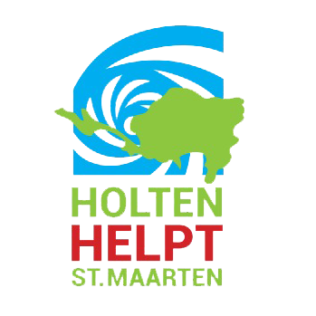
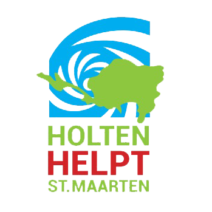
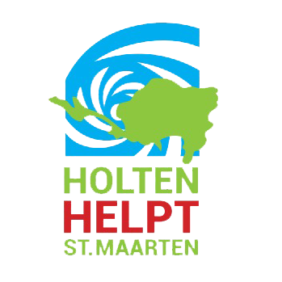
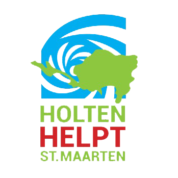

 

De weken na de orkaan kom je in een soort van roes waarbij verschillende emoties als een rode draad door de dag lopen. Onzekerheid over naderende orkanen Jose en Maria die binnen 2 weken na Irma alweer Sint Maarten passeerden en onzekerheid over de (nabije) toekomst. Angst ten aanzien van de plunderingen van winkels en verhalen dat groepen mensen wijken intrekken om huizen leeg te halen. Dit gevoel werd nog versterkt door een militaire helikopter die boven ons deel van het eiland cirkelde met zoeklichten. Ik prijs me in een gelukkige omstandigheid dat ik nooit geen oorlog heb meegemaakt maar door deze (ingeboezemde) angst kan ik me hier inmiddels wel een kleine voorstelling van maken. Karin vertelt dat uit Nederland overgekomen collega’s bij de politie tevens het gevoel hebben in een oorlogsgebied te zijn terechtgekomen. En daarnaast dan nog de twijfel over het wel of niet evacueren van Lindi en Thijne. Veel vrienden en bekenden hebben hun kinderen uitgevlogen naar Curaçao, Nederland of een ander land. Soms vergezeld van 1 van de ouders, soms ook alleen. Beweegredenen waren met name om de kinderen even uit de ellende te halen, onzekerheid over wanneer ze überhaupt weer naar school zouden kunnen en veiligheid.
Uiteindelijk na lang wikken en wegen besluiten we om gewoon met zijn 4-en op Sint Maarten te blijven. Karin heeft als intern communicatieadviseur bij het politiekorps op Sint Maarten in onze ogen de plicht om hier te blijven. Dit is de periode waarin ze er moet zijn voor het korps en het eiland, nu weggaan voelt als een soort landverraad. Ik zit met ons koophuis in mijn maag, erg dubbele gedachten om in de periode dat het eiland in puin ligt als prioriteit de verhuizing naar je eerste koopwoning op Sint Maarten te hebben. Eigenlijk kan dus zowel Karin als ik niet mee naar Nederland en de kinderen geven aan niet alleen in Nederland te willen zijn. Ze nemen liever de situatie hier zoals het is, zodat we als gezin bij elkaar kunnen blijven. Uiteindelijk besluiten we dat we de kinderen niet gaan uitvliegen. Vrienden van ons, Martin en Loes, houden de kinderen ook op het eiland, ze hebben twee meisjes in de leeftijd van Lindi en Thijne. Loes print lesmateriaal uit van groep 7 en groep 5 en is voor even ‘teacher Loes’. Alles wat op school moet (schoolkleding, zwarte schoenen, witte sokken etc.) is bij haar verboden …….. je moet er toch een klein feestje van maken. Uiteindelijk helpt dit ons ontzettend aangezien Karin inmiddels 7 dagen per week, 12-14 uur per dag werkt bij de politie en ik door kan met verhuizen. Achteraf zijn we niet ontevreden met onze (gedwongen) keuze. De kinderen maken bewust de gevolgen van de storm mee, de opruimacties en het langzaam opbouwen van het eiland. Dit alles in een soort van vertrouwde en gecontroleerde omgeving, in aanwezigheid van hun ouders …….. en we kunnen nu de impact van de hele orkaan blijven monitoren, er gaat behoorlijk wat in die koppies om …….
De uren na de storm bekijken we de schade en checken bij vrienden in de buurt of iedereen veilig is. Onze hele wijk blijkt er relatief goed af te zijn gekomen behalve dat er bijna geen boom meer overeind staat en er her en der delen van daken liggen. Onze tuin is een grote ravage. Bomen zijn als luciferhoutjes afgeknapt en onze koningspalm van 25 meter is netjes langs het huis van de buren gevallen. Als deze op hun dak was gekomen had dit zeker gezorgd dat een deel van de bovenverdieping was ingestort. Een deel van ons hek bij de oprit is uit de muur getrokken. Wonderbaarlijk heeft het onze auto’s niet geraakt.
Lindi en Thijne zijn inmiddels ook buiten en genieten om in de harde wind te lopen. Ze staan vol verbazing te kijken naar de schade en het dak van de buren in onze tuin. Het is lastig in te schatten wat er nu in de kopjes omgaat, het moet een enorme impact hebben gehad dat ze samen beneden hebben gezeten terwijl wij op de bovenverdieping de schade probeerden te beperken. Lindi geeft aan erg bang te zijn geweest toen ze alleen met Thijne beneden was. Thijne geeft later aan dat hij niet echt bang is geweest en Lindi heeft geprobeerd te kalmeren ……… de held! Hij zit wel vol verhalen over de kracht van de orkaan en vergelijkt alles met Orkaan Luis die 22 jaar geleden verschrikkelijk heeft huisgehouden op Sint Maarten. Voorafgaand aan Irma kwamen bij veel mensen de verhalen van Luis weer boven en dit heeft waarschijnlijk al grote indruk op hem gemaakt.
Ik loop ook naar ons nieuwe huis. We hebben begin augustus de sleutel gekregen van ons eigen huis en ten tijde van de orkaan zaten we nog midden in de verbouwing, niet echt een lekkere timing dus …... Gelukkig is ook bij dat huis de schade minimaal. Wat een opluchting dat ons bezit (nou ja, die van de bank) het goed heeft doorstaan, dit geeft een veilig gevoel voor de toekomst.
Later op de dag proberen we contact te zoeken met de familie. Uiteindelijk lukt het en moet de zucht van opluchting als een kleine orkaan waarneembaar zijn geweest. De beelden op televisie zijn erg heftig geweest en iedereen heeft zich grote zorgen gemaakt. Na een aantal dagen als we weer de wijk uit zijn geweest blijkt voor ons pas dat we veel geluk hebben gehad.
We houden op dat moment rekening met een paar weken geen water en elektriciteit. Douchen gebeurt onder de emmer of met een flesje water. Het zwembad van de buren gebruiken we om water uit halen om de wc’s door te spoelen 1 keer per dag. Gelukkig hadden we ons goed voorbereid en genoeg voedsel uit blik, drinkwater, leidingwater, plastic servies e.d. ingeslagen om het 1-2 weken uit te houden. De overlevingsmodus staat aan!
Zondagavond 17 september, dag 12 na de alles verwoestende orkaan Irma. Ik zit buiten op de porch deze blog te typen, binnen branden de lichten weer en de kinderen slapen, in de airco. Gisteren kwam de stroom weer terug na 11 dagen kamperen in het donker. We zaten te juichen in de auto toen we op de terugweg van vrienden onze wijk voor ons zagen, straatverlichting aan en huizen verlicht. Wat we in Nederland als een vanzelfsprekendheid ervaren was hier de afgelopen 1,5 week een luxe goed. Ik pak mijn telefoon in de hoop dat ook het internet terug is, helaas is dit niet het geval. Ik klik uit automatisme op het WhatsApp icoontje en zie de enorme hoeveelheid berichten die de afgelopen dagen zijn binnengekomen. Wat een hartverwarmende belangstelling via Facebook, WhatsApp, mail en LinkedIn. Ik zie ook de mailtjes die ik aan mezelf gestuurd heb, soms is het fijn om even dingen van je af te schrijven. Het maakt je hoofd even leeg in een tijd waarin je leven een grote emotionele rollercoaster is. Daarnaast dienen ze als een mooie input voor deze blog.
Ik denk nog even terug aan 2 weken geleden waarin we nog middenin de periode zaten van het beschermen van onze huizen. We hebben momenteel de zorg over 2 huizen aangezien we net vorige maand de sleutel hebben gekregen van ons eigen huis …….. het zal ons toch niet gebeuren dat we direct grote schade gaan krijgen aan ons nieuwe huis. Gelukkig zijn de meeste ramen voorzien van luiken en hebben we hurricane shutters voor de grote deuren. Kleine vervelende bijkomstigheid is het feit dat er net een aantal kozijnen zijn uitgesloopt die vervangen gaan worden door kunststof kozijnen. Voor deze ramen zetten we grote platen plywood. We spuiten schuim onder de voordeur, leggen wat zandzakken neer en draaien uiteindelijk de deur op slot. Nu is het hopen dat alles heel blijft.
Ons huidige huurhuis kennen we wat dat betreft beter. Hierin hebben we al twee orkanen en wat tropische stormen meegemaakt. Wij beseffen ook dat Irma van een andere categorie dreigt te worden dus nemen extra voorzorgsmaatregelen. De ramen beneden bedekken we met houten platen en ik fabriceer nog een zelfgebouwde hurricane shutter. Ik voel me de laatste dagen net McGyver of een lid van het A- Team. De benedenverdieping begint redelijk op een bunker te lijken, dit zal ook de verdieping zijn waar we zullen gaan verblijven tijdens de storm. We slapen bij de kinderen op de kamer, dit is de meest beschutte plek in het huis. Mocht het dak eraf waaien of een boom besluit op ons huis te vallen dan zouden we hier veilig moeten zijn. De dagen voorafgaand aan de storm bouwt de spanning zich steeds verder op. Op maandag ga ik nog naar kantoor maar van werken komt er weinig. In mijn hoofd ben ik bezig met de voorbereidingen en de komende orkaan is het onderwerp van gesprek. Inmiddels was duidelijk geworden dat het een hele zware orkaan zou gaan worden en dat Sint Maarten vol getroffen zou gaan worden volgens de laatste voorspellingen. Ik besluit om rond 15.00 uur maar mijn computer uit te zetten en richting huis te gaan. Op dinsdag leggen we nog de laatste hand aan de bescherming en veiligheid en slaan we nog wat extra water en eten in.
De eerste emotionele gebeurtenis hebben we de avond voor de hurricane al te pakken. Onze kat Joep had twee dagen ervoor lopen vechten met de honden van de buren, hij kwam als verliezer uit de strijd met zware verwondingen. Na een dagje en nachtje bij de dierenarts overleed hij op de avond voor de hurricane in het bijzijn van Karin ……. Pfff, heftig om naar 14 jaar afscheid te moeten nemen, zeker aan de vooravond van een zware orkaan.
In de vroege ochtend van 6 september kondigt Irma zich aan. Als we rond 5 uur wakker worden heeft de wind al aardige vormen aangenomen en trekt steeds verder aan. De voorspelling is dat het eerste deel voor het oog in ongeveer 1,5 uur over ons heen zal trekken. We lopen zenuwachtig door het huis en checken op lekkages. Alles lijkt onder controle totdat het dak begint te lekken op 1 plek in de keuken. Dit is geen goed teken aangezien dit kan duiden op een losse dakplaat. De gedachte dat deze eraf vliegt en de wind hierdoor mogelijk grip krijgt op een groter deel van het dak zit mij niet lekker. Ondertussen begint de wind aan onze porchdeuren te trekken. De kracht neemt dusdanige vormen aan dat het lijkt alsof de deur uit het slot getrokken gaat worden. Ik besluit om aan de deur te gaan hangen om bij iedere windstoot tegengewicht te kunnen geven. Karin is met de kinderen beneden en komt af en toe boven checken op lekkages. Het dak lijkt goed te gaan en er komt nog geen water onder de voordeur door. Dit is normaal gesproken een zwakke plek in het huis hebben voorgaande stormen uitgewezen. De wind blijft maar doorbeuken op het huis en op de bomen in de tuin. Een aantal bomen zijn al omgewaaid en takken breken af als luciferstokjes. Het eerste deel duurt tot ongeveer 6.30 uur waarna het rustiger wordt, we zitten in het oog. De berichtgeving geeft aan dat we ongeveer 45 minuten in het oog zullen zitten, een mooi moment om even naar buiten te gaan om te kijken of er geen takken de waterafvoer belemmert en of er zichtbare schade in aan het huis. Alles lijkt ok. Er heerst een soort van serene rust buiten, de vogels fluiten naar hartenlust en het is bijna windstil. Wat een bijzondere gewaarwording middenin dit natuurgeweld.
Na het oog is het ‘a different ball game’, de wind komt uit een andere richting dus nu is de andere kant van het huis aan de buurt. Dit is de kant waar we de eerste lekkage aan het dak hadden, dit is geen prettig vooruitzicht. Ik hou ook angstvallig de porchdeuren in de gaten en besluit om boven te blijven om niet te laat te zijn. Als deze deuren eruit worden geblazen krijgt de wind vrij spel door het huis en zijn de gevolgen dramatisch. Een harde windstoot heeft de deur te pakken en trekt hem naar buiten, dit gaat nog net goed. Ik besluit de klink van de deur weer continue vast te houden. Inmiddels stroomt het water onder de keukenkastjes en de porchdeuren door de woonkamer in. Karin probeert alles boven te houden en houdt de kinderen beneden in de gaten. Het feit dat ik met mijn voeten in het water sta en de deurklink nat wordt maakt het tegengewicht geven niet makkelijker. Links van mij zie ik de wind als een soort tornado rond het huis blazen en komen grote dakplaten op ons huis af. Achter mij sneuvelen de eerste louvre ramen uit het keukenraam. Gerinkel van glas achter me, vliegende dakplaten links van me en toeslaande vermoeidheid in mijn armen zorgen voor zeer angstige momenten. Een paar keer roep ik tegen Karin dat ze onmiddellijk naar beneden moet gaan naar de kinderen omdat de situatie onhoudbaar dreigt te worden, gelukkig gaat het iedere keer goed. De storm na het oog houdt langer aan dat we gedacht en gehoopt hadden, de minuten gaan tergend langzaam voorbij.
Rond 9.30 uur is het ergste voorbij en halen we met een gerust hart adem. We hebben nog een dak, de ramen hebben het gehouden en de waterschade is beperkt tot de bovenste verdieping. Belangrijkste van allemaal is dat we alle 4 gezond zijn!